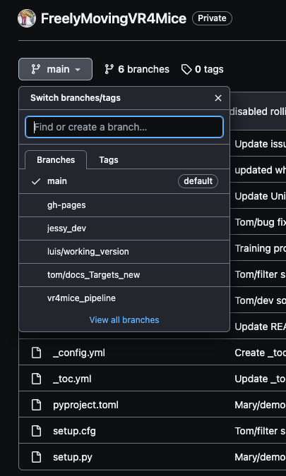
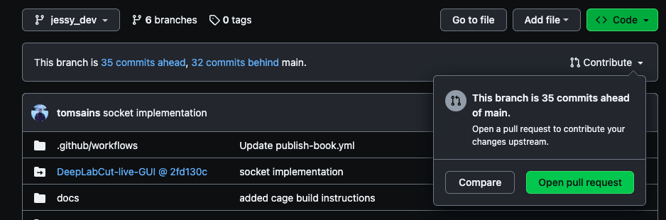

Update the AugmentedReality game#
The FreelyMovingVR4Mice repo is a classical GitHub repository. Below you will find classical resources on how to develop and manage code on GitHub. It is loosely based on the GitHub documentation on how to contribute to projects.
If you want to update game, here is the classical process:
Create a branch in which you will do all your changes.
git checkout -b [your_ name]/[your_update]
Example of branch name:
celia/add-circle-shape.Go ahead and make your changes on the project in your branch 🔥, using your favorite text editor, like Visual Studio Code.
When you are satisfied with your changes, commit your changes.
git add .tells Git that you want to include all of your changes in the next commit, you can also specify the file to add, by replacing the.by the file names of the files you changed.git committakes a snapshot of those changes. Please provide a message with yourgit commit, to specify what you implemented (see How to write a good commit message if you’re new at it 🤗).git add . git commit -m "a short description of the change"
Right now, your changes only exist locally. When you’re ready to push your changes up to GitHub, push your changes to the remote. For that, run:
git push origin [name/of/your/branch]
You’re ready to propose changes into the main project! 🎉 Next step is to create a pull request. Go to the repo page. By default, you’re seeing the code on the
mainbranch.Select the branch with the changes you just pushed.

Click on
Contribute>>Open pull request.

Add a clear title summarizing your changes, describe in detail your changes in the description, add reviewers and once you are satisfied with it, click on ``Create pull request`.
Congratulation you updated our codebase! 🧚♀️ The reviewers will read your code and need to approve the changes. Then the changes can be merged to the main codebase.
{kind=link}
{kind=link}
🚨 To get the changes up and running on Unity, follow Rebuild a Unity game.